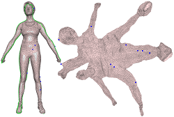
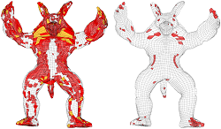
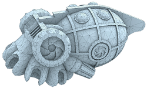
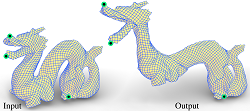

|

|
Practical Construction of Globally Injective Parameterizations with Positional Constraints
Qi Wang, Wen-Xiang Zhang, Yuan-Yuan Cheng, Ligang Liu, Xiao-Ming Fu
Computational Visual Media, 9(2), 2023.
[Code and Data]. [DOI].
|
|

|
Untangling All-Hex Meshes via Adaptive Boundary Optimization
Qing Huang, Wen-Xiang Zhang, Qi Wang, Ligang Liu, Xiao-Ming Fu
Graphical Models (CVM), 2022.
[Code]. [DOI].
|
|

|
Constrained Remeshing Using Evolutionary Vertex Optimization
Wen-Xiang Zhang, Qi Wang, Jia-Peng Guo, Shuangming Chai, Ligang Liu, Xiao-Ming Fu
Computer Graphics Forum (Eurographics), 41(2), 2022.
[Data]. [Code]. [Presentation]. [Supp]. [DOI].
|
|

|
Interactive Editing of Discrete Chebyshev Nets
Rui-Zeng Li, Jia-Peng Guo, Qi Wang, Shuangming Chai, Ligang Liu, Xiao-Ming Fu
Computer Graphics Forum (Eurographics), 41(2), 2022.
[Video]. [Supp]. [Presentation]. [Code]. [DOI].
|
|